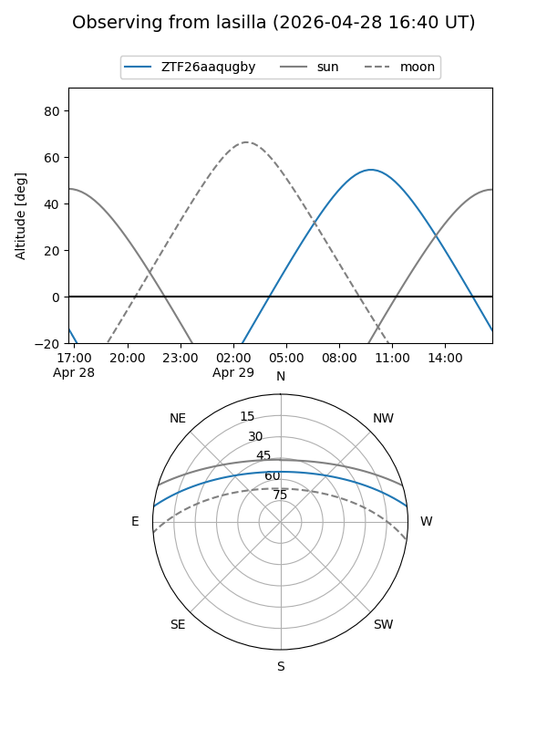
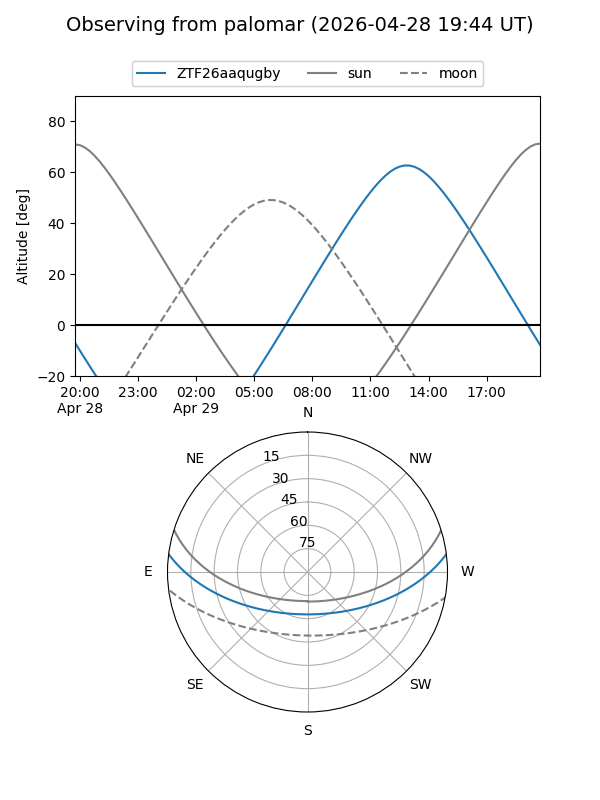

ZTF26aaqugby
Target ZTF26aaqugby at 2026-04-28 20:51
Aliases and brokers:
FINK: link
Lasair: link
ALeRCE: link
alt names
ZTF26aaqugby (ztf,fink_ztf)
Coordinates:
equatorial (ra, dec) = 293.3775,+6.04817
equatorial (HMS+DMS) = 19:33:30.59,+06:02:53.43
galactic (l, b) = (43.1675,-6.51787)
Flags:
Photometry:
last ztfg=17.61, ztfr=19.02
1 ztfg, 1 ztfr detections
Lightcurve
Visibility


Additional plots